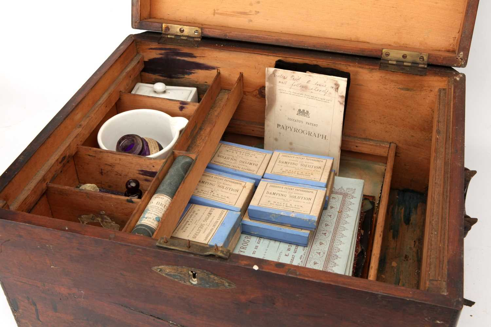
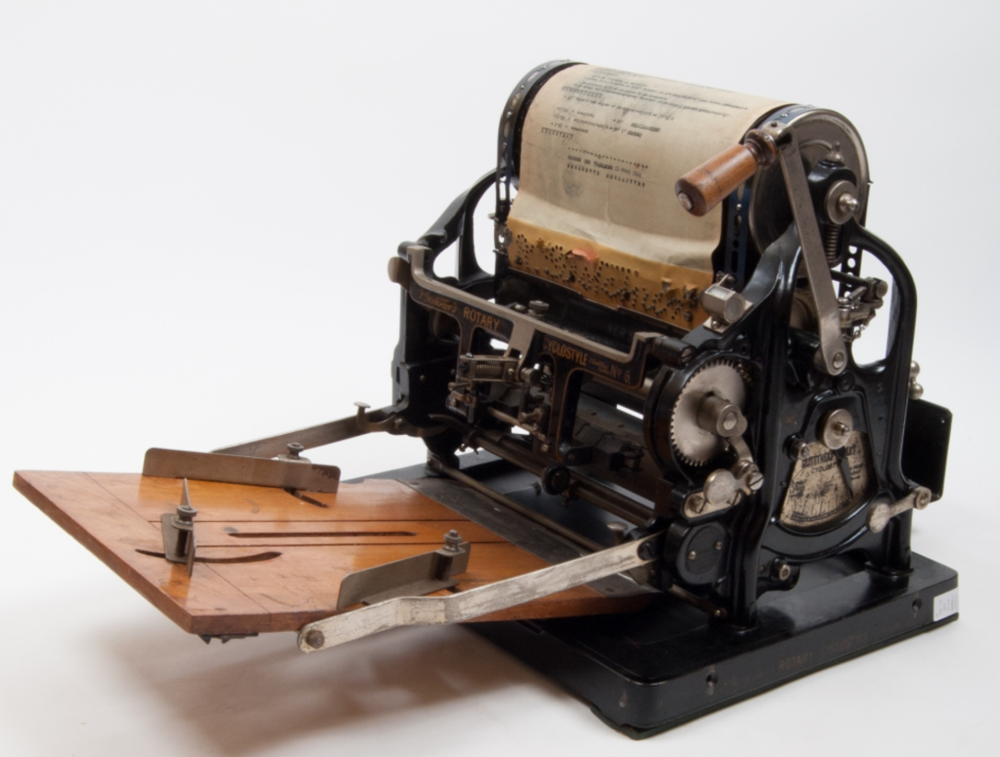

History & Timeline
Use of stencils is an ancient art, but – through chemistry, papers, and presses – techniques advanced rapidly in the late nineteenth century:
Papyrograph
A description of the Papyrograph method of duplication was published by David Owen:
A major beneficiary of the invention of synthetic dyes was a document reproduction technique known as stencil duplicating. Its earliest form was invented in 1874 by Eugenio de Zuccato, a young Italian studying law in London, who called his device the Papyrograph. Zuccato's system involved writing on a sheet of varnished paper with caustic ink, which ate through the varnish and paper fibers, leaving holes where the writing had been. This sheet – which had now become a stencil – was placed on a blank sheet of paper, and ink rolled over it so that the ink oozed through the holes, creating a duplicate on the second sheet.
The process was commercialized and Zuccato applied for a patent in 1895 having stencils prepared by typewriting.
Electric Pen
Thomas Edison received US patent 180,857 for Autographic Printing on August 8, 1876. The patent covered the electric pen, used for making the stencil, and the flatbed duplicating press. In 1880, Edison obtained a further patent, US 224,665: "Method of Preparing Autographic Stencils for Printing," which covered the making of stencils using a file plate, a grooved metal plate on which the stencil was placed which perforated the stencil when written on with a blunt metal stylus.
The word mimeograph was first used by Albert Blake Dick when he licensed Edison's patents in 1887.
Dick received Trademark Registration no. 0356815 for the term mimeograph in the US Patent Office. It is currently[as of?] listed as a dead entry, but shows the A.B. Dick Company of Chicago as the owner of the name.
Over time, the term became generic and is now an example of a genericized trademark. (Roneograph, also Roneo machine, was another trademark used for mimeograph machines, the name being a contraction of Rotary Neostyle.)
Cyclostyle
In 1891, David Gestetner patented his Automatic Cyclostyle. This was one of the first rotary machines that retained the flatbed, which passed back and forth under inked rollers.
This invention provided for more automated, faster reproductions since the pages were produced and moved by rollers instead of pressing one single sheet at a time.
By 1900, two primary types of mimeographs had come into use: a single-drum machine and a dual-drum machine. The single-drum machine used a single drum for ink transfer to the stencil, and the dual-drum machine used two drums and silk-screens to transfer the ink to the stencils.
The single drum (example Roneo) machine could be easily used for multi-color work by changing the drum – each of which contained ink of a different color. This was spot color for mastheads. Colors could not be mixed.
The mimeograph became popular because it was much cheaper than traditional print – there was neither typesetting nor skilled labor involved. One individual with a typewriter and the necessary equipment became their own printing factory, allowing for greater circulation of printed material.